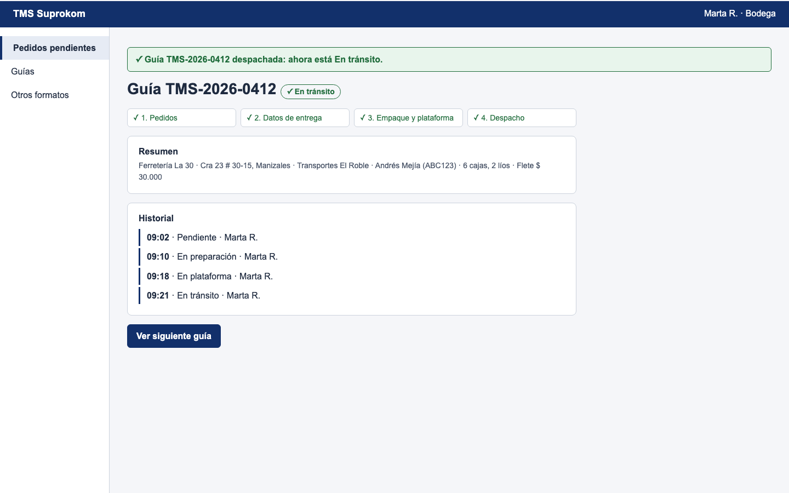

← Volver al prototipo
El estado y el historial se conservan en todos los formatos; cambian la cantidad de información, la interacción y el momento de uso.

✓ En tránsito
Último cambio:09:21 · Marta R.
Andrés Mejía · ABC123